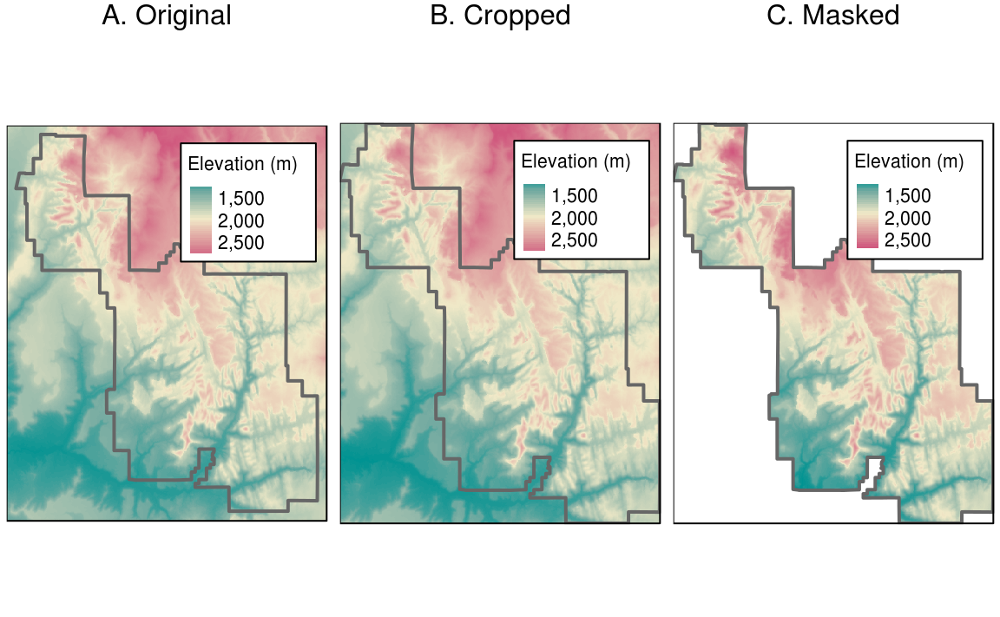
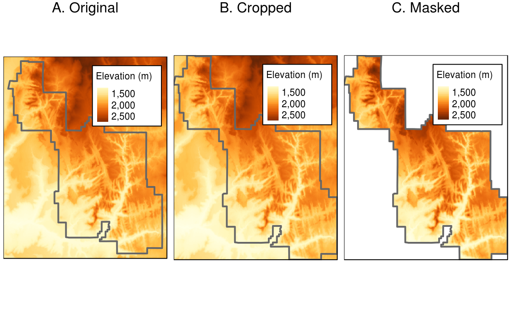

11 Raster-vector interactions
Prerequisites
- This chapter requires the following packages:
library(sf)
library(raster)
library(tidyverse)
library(spData)
library(spDataLarge)11.1 Introduction
11.2 Raster clipping
srtm = raster((system.file("raster/srtm.tif", package = "spDataLarge")))zion = st_read((system.file("vector/zion.gpkg", package = "spDataLarge"))) %>%
st_transform(4326)
#> Reading layer `zion' from data source `/home/travis/R/Library/spDataLarge/vector/zion.gpkg' using driver `GPKG'
#> Simple feature collection with 1 feature and 11 fields
#> geometry type: POLYGON
#> dimension: XY
#> bbox: xmin: 302903.1 ymin: 4112244 xmax: 334735.5 ymax: 4153087
#> epsg (SRID): NA
#> proj4string: +proj=utm +zone=12 +ellps=GRS80 +towgs84=0,0,0,0,0,0,0 +units=m +no_defssrtm_cropped = crop(srtm, as(zion, "Spatial"))srtm_masked = mask(srtm_cropped, zion)
11.3 Raster extraction
11.4 Rasterization
Rasterization is a conversion from vector objects into rasters. Usually, the output raster is used for quantitative analysis (e.g. analysis of terrain) or modeling.
The rasterize() function takes a vector object and converts it into a raster with extent, resolution and CRS determined by another raster object. Parameters of a template raster have big impact on rasterization output – coarse resolution could not capture all of important spatial objects, while high resolution could increase computation times. However, there is no simple rules for parameters selection as it depends on the input data and rasterization purpose. For the first group of examples, we will use a template raster having the same extent and CRS as cycle_hire_osm_projected and spatial resolution of 1000 meters:
cycle_hire_osm_projected = st_transform(cycle_hire_osm, 27700)
raster_template = raster(extent(cycle_hire_osm_projected), resolution = 1000,
crs = st_crs(cycle_hire_osm_projected)$proj4string)Rasterization is a very flexible operation and gives different results based not only on a template raster, but also on the type of input vector (e.g. points, polygons) and given arguments.
Let’s try three different approaches to rasterize points - cycle hire locations across London (Figure 11.1:A). The simplest case is when we want to create a raster containing areas with cycle hire points (also known as a presence/absence raster). In this situation, rasterize() expects only three arguments - an input vector data, a raster template, and a value to be transferred to all non-empty cells (Figure 11.1:B).
ch_raster1 = rasterize(cycle_hire_osm_projected, raster_template, field = 1)rasterize() also could take a fun argument which specifies how attributes are transferred to the raster object. For example, the fun = "count" argument counts the number of points in each grid cell (Figure 11.1:C).
ch_raster2 = rasterize(cycle_hire_osm_projected, raster_template,
field = 1, fun = "count")The new output, ch_raster2, shows the number of cycle hire points in each grid cell. However, the cycle hire locations have different numbers of bicycles, which is described by the capacity variable. We need to select a field ("capacity") and a function (sum) to determine a cycle hire capacity in each grid cell (Figure 11.1:D). In the same way, another statistics could be calculated such as an average capacity for each grid cell, etc.
ch_raster3 = rasterize(cycle_hire_osm_projected, raster_template,
field = "capacity", fun = sum)
Figure 11.1: Examples of point’s rasterization.
Additionally, we will illustrate polygons and lines rasterizations using California’s polygons (california) and borders (california_borders). A template raster here will have the resolution of a 0.5 degree:
california = dplyr::filter(us_states, NAME == "California")
california_borders = st_cast(california, "MULTILINESTRING")
raster_template2 = raster(extent(california), resolution = 0.5,
crs = st_crs(california)$proj4string)All cells that are touched by a line get a value in a line rasterization (Figure 11.2:A).
california_raster1 = rasterize(california_borders, raster_template2)On the other hand, polygon rasterization is based on the positions of cells’ centers (points on Figure 11.2:B). Values are only given when the center of the cell lies inside of the input polygon (Figure 11.2:B).
california_raster2 = rasterize(california, raster_template2)It is also possible to use the field or fun arguments for lines and polygons rasterizations.
Figure 11.2: Examples of line and polygon rasterizations.
While rasterize works well for most cases, it is not performance optimized. Fortunately, there are several alternatives, including the fasterize::fasterize()59 and gdalUtils::gdal_rasterize(). The former is much (100 times+) faster than rasterize() but is currently limited to polygon rasterization. The latter is part of GDAL and therefore requires a vector file, instead of an sf object, as an input and rasterization parameters, instead of a Raster* template object.60
11.5 Spatial vectorization
Spatial vectorization is the counterpart of rasterization 11.4, and hence the process of converting continuous raster data into discrete vector data such as points, lines or polygons.
for-loops and alike by doing things like 1:10 / 2 (see also Wickham (2014)).
The simplest form of vectorization is to convert a raster into points by keeping the cell values and replacing the grid cells by its centroids. The rasterToPoints() does exactly this for all non-NA raster grid cells (Figure 11.3). Setting the spatial parameter to TRUE makes sure that the output is a spatial object, otherwise a matrix is returned.
elev_point = rasterToPoints(elev, spatial = TRUE) %>%
st_as_sf()
Figure 11.3: Raster and point representation of elev.
Another common application is the representation of a digital elevation model as contour lines, hence, converting raster data into spatial lines. Here, we will us a real-world DEM since our artificial raster elev produces parallel lines (give it a try yourself) because when creating it we made the upper left corner the lowest and the lower right corner the highest value while increasing cell values by one from left to right. rasterToContour() is a wrapper around contourLines().
# not shown
data(dem, package = "RQGIS")
plot(dem, axes = FALSE)
plot(rasterToContour(dem), add = TRUE)Use contour(), rasterVis::contourplot() or tmap::tm_iso() if you want to add contour lines to a plot with isoline labels (Fig. 11.4).
Figure 11.4: DEM hillshade of the southern flank of Mt. Mongón overlaid with contour lines.
Finally, rasterToPolygons() converts each raster cell into one polygon consisting of five coordinates all of which need to be explicitly stored. Be careful with this approach when using large raster datasets since you might run into memory problems. Here, we convert grain into polygons and subsequently dissolve the output in accordance with the grain size categories which rasterToPolygons() stored in an attribute named layer (see section 5.3.6 and Figure 11.5). A convenient alternative for converting rasters into polygons is spex::polygonize() which by default returns an sf object.
grain_poly = rasterToPolygons(grain) %>%
st_as_sf()
grain_poly2 = grain_poly %>%
group_by(layer) %>%
summarize()Figure 11.5: Illustration of vectorization of raster (left) into polygon (center) and polygon aggregation (right).
11.6 Exercises
- Subset points higher than 3100 meters in New Zealand (the
nz_heightobject). Using the new object:- Count numbers of the highest points in grid cells with a resolution of 3 km.
- Find maximum elevation value for grid cells with a resolution of 3 km.
- Polygonize the
graindataset and filter all squares representing clay.- Name two advantages and disadvantages of vector data over raster data.
- At which points would it be useful to convert rasters to vectors in your work?
References
Wickham, Hadley. 2014. Advanced R. CRC Press. http://www.crcpress.com/product/isbn/9781466586963 http://adv-r.had.co.nz http://www.crcpress.com/product/isbn/9781466586963 http://adv-r.had.co.nz.
The fasterize package is available at https://github.com/ecohealthalliance/fasterize.↩
See more at http://www.gdal.org/gdal_rasterize.html.↩